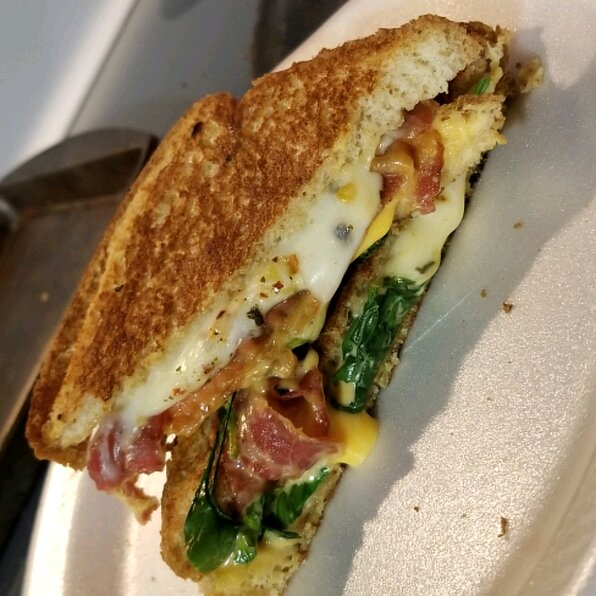

Sandwich Recipe

Description
My beloved grilled cheese sandwich! It has 3 types of cheeses and a kick.
Ingredients
- 2 tablespoons butter, divided
- 4 slices whole wheat bread
- 2 slices white American cheese
- 4 thin slices tomato
- ½ avocado, thinly sliced (Optional)
- 2 tablespoons chopped fresh basil
- 1 teaspoon red pepper flakes
- 1 pinch garlic salt, or to taste
- 4 ounces fresh mozzarella cheese, thinly sliced
- 2 slices provolone cheese
Steps
- Preheat skillet on medium heat.
-
Melt butter in a large skillet or frying pan over medium heat; add
zucchini, 3 cloves minced garlic, salt, and pepper. Cook and stir
zucchini mixture in the melted butter until most of the moisture has
evaporated, 10 to 15 minutes.
-
Spread 1/2 tablespoon butter onto one side of each slice of bread to
cover evenly. With buttered sides of the bread facing out, layer 1 slice
American cheese, 2 slices tomato, and 2 slices avocado onto each of 2 of
the bread slices. Sprinkle about half the basil, red pepper flakes, and
garlic salt atop the avocado layer. Finish by topping each with half the
mozzarella and 1 slice provolone. Top each with 1 of the remaining bread
slices with the buttered side facing out.
-
Cook in hot skillet until bread is golden brown and cheese is melted, 3
to 4 minutes per side.